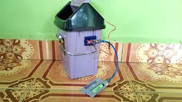

TOMAS
by TECH TITANS (XI Kartini 6 Kelompok 2)

Deskripsi Produk
Tomas (Tong Sampah Otomatis) adalah hasil karya siswa kelas XI Kartini 6, Kelompok 2. Produk ini merupakan tong sampah yang dilengkapi sensor gerak, memungkinkan pengguna membuang sampah tanpa menyentuh permukaan tong. Saat tangan didekatkan ke sensor, tutup tong akan terbuka secara otomatis, sehingga proses pembuangan sampah menjadi lebih higienis dan nyaman.
Fitur Produk
- Dilengkapi dengan sensor yang merespons gerakan tangan, membuat tutup tong terbuka secara otomatis tanpa sentuhan.
- Terbuat dari bahan yang tahan karat dan tidak menyerap noda, sehingga tong sampah mudah dibersihkan dan tahan lama.
- Memiliki bentuk yang stylish serta penutup rapat, menjaga kebersihan dan menghindari bau tidak sedap keluar.
- Tutup tong akan menutup kembali secara otomatis setelah sampah dibuang, menjaga kebersihan dan efisiensi penggunaan.
Kesimpulan Produk
- Pengguna tidak perlu menyentuh tong sampah, sehingga meminimalisir kontak dengan kotoran atau kuman.
- Proses pembuangan sampah menjadi lebih cepat dan efisien karena sistem otomatis yang responsif.
- Dengan sistem tanpa sentuh dan tutup otomatis, risiko penyebaran bakteri dan kuman dapat dikurangi secara signifikan.
- Mudah dioperasikan oleh siapa saja dan cocok digunakan di rumah, sekolah, atau tempat umum lainnya.
Kembali